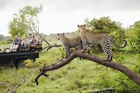
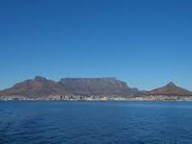
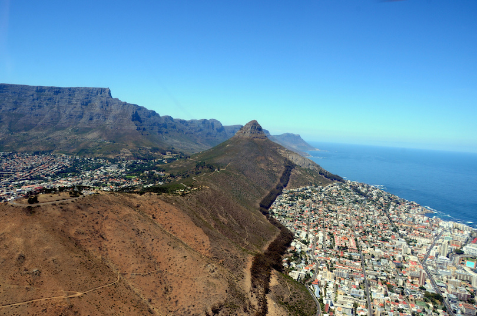
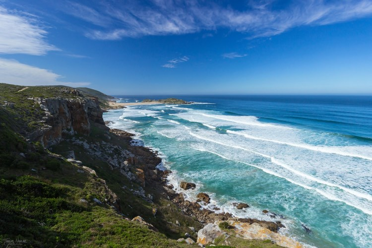
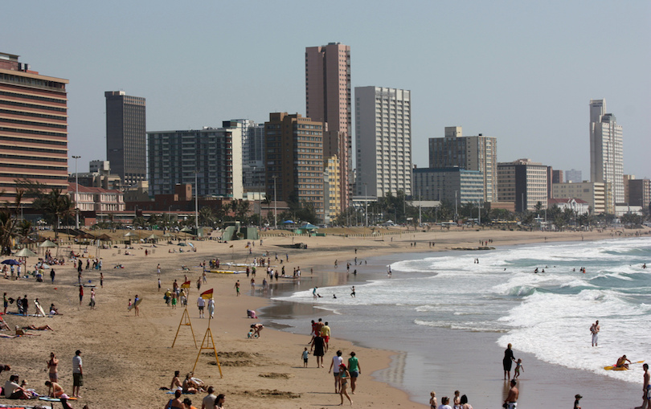

South Africa, officially the Republic of South Africa (RSA), is the southernmost country in Africa. It is bounded to the south by 2,798 kilometres (1,739 mi) of coastline of Southern Africa stretching along the South Atlantic and Indian Oceans;[9][10][11] to the north by the neighbouring countries of Namibia, Botswana, and Zimbabwe; and to the east and northeast by Mozambique and Eswatini (Swaziland); and it surrounds the enclaved country of Lesotho.[12] South Africa is the largest country in Southern Africa and the 25th-largest country in the world by land area and, with over 57 million people, is the world's 24th-most populous nation. It is the southernmost country on the mainland of the Old World or the Eastern Hemisphere. About 80 percent of South Africans are of Bantu ancestry,[5] divided among a variety of ethnic groups speaking different African languages, nine of which have official status.[11] The remaining population consists of Africa's largest communities of European, Asian (Indian),[13] and multiracial (Coloured) ancestry.
KURGER NATIONAL PARK

Kruger National Park is one of the largest game reserves in Africa. It covers an area of 19,485 km2 (7,523 sq mi) in the provinces of Limpopo and Mpumalanga in northeastern South Africa, and extends 360 km (220 mi) from north to south and 65 km (40 mi) from east to west. The administrative headquarters are in Skukuza. Areas of the park were first protected by the government of the South African Republic in 1898, and it became South Africa's first national park in 1926.
To the west and south of the Kruger National Park are the two South African provinces of Limpopo and Mpumalanga. In the north is Zimbabwe, and to the east is Mozambique. It is now part of the Great Limpopo Transfrontier Park, a peace park that links Kruger National Park with the Gonarezhou National Park in Zimbabwe, and with the Limpopo National Park in Mozambique.
TABLE MOUNTAIN  Table Mountain (Khoekhoe: Huri ‡oaxa, mountain rising from the sea; Afrikaans: Tafelberg) is a flat-topped mountain forming a prominent landmark overlooking the city of Cape Town in South Africa. It is a significant tourist attraction, with many visitors using the cableway or hiking to the top. The mountain forms part of the Table Mountain National Park. Table Mountain is home to a large array of fauna and flora, most of which is endemic.The main feature of Table Mountain is the level plateau approximately three kilometres (2 mi) from side to side, edged by impressive cliffs. The plateau, flanked by Devil's Peak to the east and by Lion's Head to the west, forms a dramatic backdrop to Cape Town. This broad sweep of mountainous heights, together with Signal Hill, forms the natural amphitheatre of the City Bowl and Table Bay harbour
CAPE TOWN  Located on the southwest tip of South Africa’s Western Cape Province, Cape Town is the most popular tourist destination in all of Africa. The metropolis enjoys a mild, Mediterranean climate, a well-developed infrastructure and a spectacular natural setting. Cape Town’s center is located in a relatively small area between Table Mountain and Table Bay. The city also serves as a home base for exploring nearby attractions, including the region’s many diverse beaches as well as the rolling hills and valleys of the Winelands.
GARDEN ROUTE  The Garden Route is a scenic stretch of the south-eastern coast of South Africa. It extends from Mossel Bay in the Western Cape to the Storms River in the Eastern Cape. The name comes from the diverse vegetation encountered here and the numerous lagoons and lakes dotted along the coast. It includes some of the best places to visit in South Africa including Knysna, Plettenberg Bay and Nature’s Valley.
DURBAN  South Africa’s second-largest city, Durban is located on South Africa’s eastern coast. Durban’s subtropical climate, scenic beaches and close proximity to Johannesburg have made the coastal city a popular vacation destination for South Africans. The English Colonial architecture that once dominated the city has been enlivened by a mix of Zulu murals, Islamic mosques, Hindu temples and Christian churches.